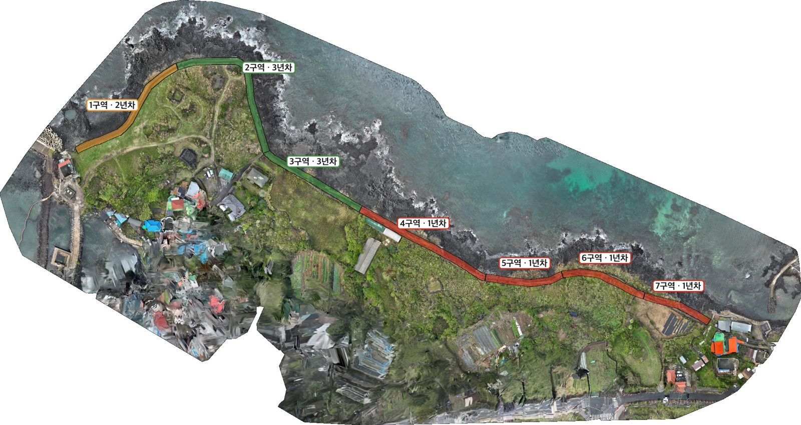
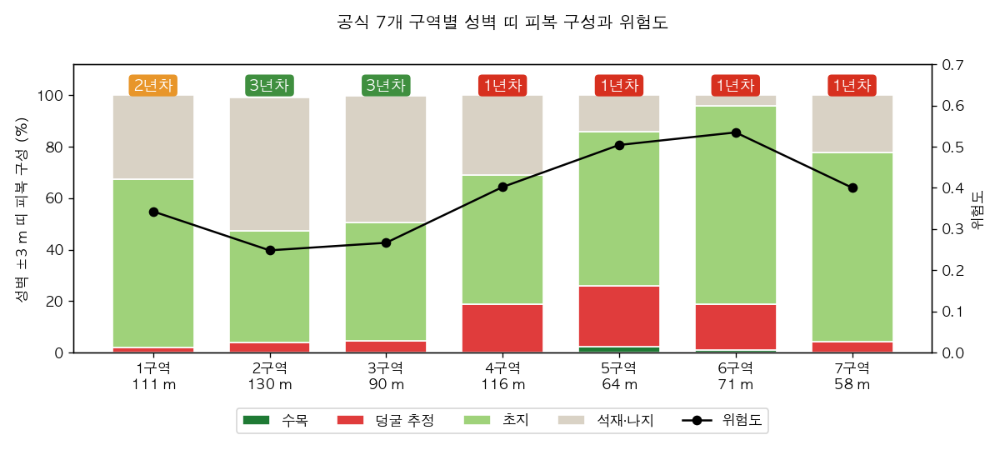
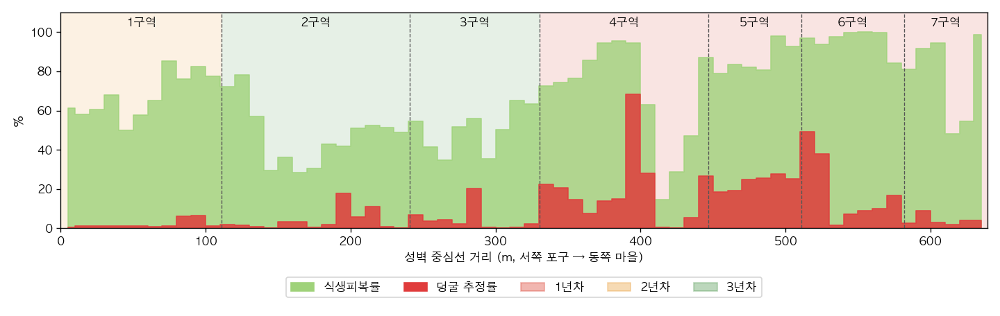

별도환해장성 M3M 항공조사 — ODM 처리·식생 분석 보고서
제주 화북 별도환해장성 · 촬영 2026-10-12 (DJI Mavic 3 Multispectral) · 처리 2026-10-16~17 (OpenDroneMap 3.6.2) · v5 (2026-10-28 성벽 위 식생 높이 보정)
0. 요약
- 성벽 위 식생 높이를 바로잡았습니다. v4까지는 식생 높이를 "표면 고도 − 지면 고도"로 쟀는데, 지면 고도 모델이 성벽까지 지면이 아닌 것으로 지워, 성벽 위 풀·덩굴 높이에 성벽 높이(약 1.3~2.1 m)가 더해졌습니다. 그래서 성벽 위 식생이 덩굴·수목으로 많이 분류됐습니다.
- v5는 성벽 몸체 위에서만 높이를 성벽 윗면 기준으로 다시 쟀습니다(성벽 방향 10 m 안 꼭대기 높이의 하위 20%를 맨 돌 높이로 봄). 덩굴 추정률은 14.5% → 9.9%, 수목률은 5.6% → 0.4%로 줄었습니다. 식생피복률(67.2%)과 1·2·3년차 배분은 그대로입니다.
- 연차 배분 단위를 해안선 50 m 구간 17개에서 현장 관리번호 기준 공식 7개 구역으로 바꿨습니다.
- 연차를 이번 분석 수치(식생·덩굴·수목 비율)로 다시 정했습니다. 같은 연차는 서로 붙어 있는 구역끼리 묶어, 인원이 한 곳에서 이어서 작업할 수 있게 했습니다.
- 해안선 대리 분석 대신 성벽 중심선을 직접 그려(639 m, 지정 수량 약 650 m와 일치) 중심선 양옆 3 m 띠로 통계를 냈습니다.
- 1년차 — 4~7구역 (309 m). 식생이 가장 많이 덮인 연속 구간입니다(면적 가중 식생 80.3%, 덩굴 16.8%). 최우선은 6구역(위험도 0.535)이고, 덩굴 추정이 가장 높은 곳은 5구역(23.4%)입니다.
- 2년차 — 1구역 (111 m). 포구 쪽 서측 성벽입니다. 바깥면을 따라 마른 덩굴·초본 띠가 있습니다(식생 67.4%, 덩굴 2.0%).
- 3년차 — 2·3구역 (220 m). 북측 모서리와 동쪽으로 꺾이는 구간입니다. 바깥쪽이 암반이라 식생이 가장 적습니다(식생 48.7%, 덩굴 4.1%).
- 기존 점검 기록과 맞습니다. 2022·2023년 돌봄사업단 드론 점검도 "1~2구역 양호", "3~5구역 내벽 덩굴·초본"이라고 적었습니다. 이번 수치로는 4~7구역이 더 심하고, 3구역은 그보다 덜합니다.
- 석재와 식생은 분명하게 구분됩니다. 아래 비교 뷰어에서 구역마다 RGB 사진과 NDVI·위색·분류·높이를 슬라이더로 겹쳐 볼 수 있습니다.
- 이번 자료는 1차 기준(baseline)입니다. 절대 위치가 RTK 기준으로 수평 약 0.8 m, 수직 약 3.6 m 평행 이동돼 있습니다. 형태·비율 분석에는 영향이 없습니다.
1. 장소별 비교 뷰어
위쪽 버튼으로 구역을 고르고, 아래 버튼으로 오른쪽에 겹칠 분석 레이어를 고릅니다. 사진 위를 끌거나 슬라이더를 움직이면 왼쪽(RGB)과 오른쪽(분석)의 경계가 바뀝니다.
2. 사업 배경과 분석 목적
제주도 환해장성(지정 8 · 비지정 8)을 포함한 문화재 돌봄사업 제안 자료입니다. 관리 대상 349개 문화재를 3년 주기로 관리할 때, 드론 분석으로 어디에 먼저 인력을 넣을지 근거를 만드는 예시입니다. 아래는 회의 녹취록에서 정리한 요구입니다.
| # | 회의에서 나온 요구 | 이 보고서의 대응 |
|---|---|---|
| ① | 성벽과 엽록소를 가진 식생의 구분, 한눈에 다른 색 | NDVI·근적외 기반 석재·초지·덩굴·수목 분류 (비교 뷰어 "석재·식생 분류") |
| ② | 성벽 중심과 양옆까지 함께 분석 | 성벽 중심선을 그려 양옆 3 m 띠로 분석 (v4). 해안선 거리대 분석은 참고로 유지 |
| ③ | 구간별 1·2·3년차 순환 관리계획 | 공식 7개 구역의 분석 수치로 연차 배분, 같은 연차는 연속 구역끼리 묶음 (6장) |
| ④ | 관리 구역과 미관리 구역의 차이 | 중심선 레이어 managed 필드로 비교. 현재 관리 범위 정보 필요 |
| ⑤ | 기준점을 두어 이전·이후 비교 | 이번 = 1차 기준. cm급 비교는 RTK 재촬영부터 |
| ⑥ | 덩굴 추가 촬영 | 미실시. NDVI + 높이(CHM)로 대리 추정 |
핵심 위협은 덩굴·관목이 돌 사이에서 굵어지며 돌을 벌리는 것입니다. 가늘 때 3년 주기로 제거한다는 것이 사업 설계의 뼈대입니다.
3. 데이터와 처리
| 비행 | RGB | MS(4밴드) | 위치측위 | 특징 |
|---|---|---|---|---|
| 006 | 529 | 2,116 | 단독측위 | 연직, 고도 41 m |
| 007 | 611 | 2,444 | 단독측위 | 연직 |
| 008 | 426 | 1,704 | RTK Fixed | 연직 |
| 009 | 85 | 340 | RTK Fixed | 사선(−58~−15°), 돔 왜곡 방지 |
| 합계 | 1,651 | 6,604 | 단독측위 69% · RTK 31% | |
- RGB:
--gps-accuracy 1.5 --feature-quality high --min-num-features 12000 --pc-quality high --dsm --dtm --dem-resolution 5 --orthophoto-resolution 1.5 - MS:
--gps-accuracy 1.5 --radiometric-calibration camera+sun --feature-quality high --pc-quality high --dsm --dem-resolution 5 --orthophoto-resolution 2
처리 중 발견하고 해결한 문제
| 문제 | 원인 | 조치 |
|---|---|---|
| 데이터 로드 중단 | RGB 2장의 DJI MakerNote 빈 값 때문에 exifread가 오류를 냄 | 빈 값 건너뛰기 1줄 추가(원본 백업). 사진은 빠짐없이 사용 |
| GPU 미사용 | ODM 폴더의 nvcuda.dll이 20 KB 빈 껍데기라 실제 드라이버 대신 불러옴 | 이름 변경 → 깊이맵 분당 8장에서 377장으로 약 45배. 이미 만든 835장은 재활용 |
| 검은 현무암이 식생으로 오분류 | 암반의 적·근적외 반사율이 0.004 수준이라 NDVI 비율이 튐 | 식생 판정에 근적외 반사율 ≥ 0.012 조건 추가(풀밭 하위 10%가 0.027) |
| 카메라 위치 복원이 느림 | OpenSfM 증분 복원은 CPU 1코어 위주 | 정상 동작. 이 PC에서 --split은 순차 처리라 이득이 없음 |
4. 처리 품질
| 지표 | RGB | MS | 맥 자체 파이프라인(참고) |
|---|---|---|---|
| 카메라 복원 | 1,645 / 1,651 | 1,625 / 1,651 | 1,645 / 1,651 |
| 3D 점 (희소) | 1,528,710 | 703,529 | 985,868 |
| 재투영 오차 | 1.28 px | 1.32 px | 0.69 px |
| 정사영상 | 43,462 × 23,095 | 30,434 × 16,964 | 44,981 × 23,138 |
| 절대 위치 검증 기준 | 매수 | 수평 차 (중앙 / p90) | 수직 차 (중앙) |
|---|---|---|---|
| RTK Fixed 사진 (008·009) | 507 | 0.78 m / 0.83 m | −3.57 m |
| 단독측위 사진 (006·007) | 1,138 | 0.36 m / 0.54 m | +2.18 m |
RGB↔MS 상대 정합은 녹색 밴드 위상상관(10 cm 격자, 신뢰 타일 28개)으로 쟀습니다. 결과는 중앙 0.20 m, p90 0.30 m이고 방향성은 없습니다. 해안 10–25 m 분석에는 충분하지만, 중심선 기준 0–1 m 거리대에서는 경계 픽셀이 섞일 수 있습니다.

NDVI 분포. 식생 봉우리 0.6~0.8, 바다는 음수로 정상입니다.
반사율 절대값은 낮게 나왔습니다(풀밭 근적외 약 0.04). camera+sun 보정의 알려진 과소평가 특성이고, 보정판이 없으면 절대 반사율은 성립하지 않습니다. NDVI 같은 비율 지수는 유효해서 이번 분석에는 지장이 없습니다.
5. 공식 7개 구역과 성벽 중심선
구역은 돌봄사업단 관리번호(1~7구역) 구역도와 2022·2023·2025년 점검 사진을 기준으로 잡았습니다.
- 중심선: 1.5 cm 정사영상에서 성벽을 따라 그렸습니다. 서쪽 맨 암반 구간은 DSM(표면 고도)의 담 꼭대기에 맞춰 보정했습니다. 길이는 639 m이고, 지정 수량 약 650 m와 맞습니다.
- 구역 경계:
- 1/2구역 = 북서쪽 모서리(포구 쪽 서측 성벽 끝)
- 2/3구역 = 남동쪽으로 꺾이는 모서리(건물 앞)
- 3~7구역 = 구역도의 길이 비율대로 나눔. 4구역 시작점이 비닐하우스 앞에 오는 것으로 확인했습니다(2025년 점검 "4구역 내벽 비닐하우스").
- 분석 띠: 중심선 양옆 3 m(폭 6 m). 담 몸체와 바로 붙은 덩굴·초본을 담습니다. v4에서 띠 폭을 ±1.5 m, ±2 m로 바꿔도 연차 배분은 같았습니다.

공식 7개 구역과 연차 배분. 색 띠 = 성벽 중심선 ±3 m.
6. 구역별 위험도와 3년 순환 배분
위험도 = 0.5 × 식생피복률 + 0.3 × 덩굴 추정률 + 0.2 × 수목률 (성벽 ±3 m 띠 기준). v5 보정 뒤 이 성벽의 수목률은 0~2%대라 수목 항은 거의 0입니다. 관리가 끊겨 나무가 자라는 곳을 잡기 위한 항이라 식은 그대로 둡니다.
연차 정하는 법. 7개 구역을 순서대로 세 묶음으로 나누는 모든 경우(15가지)를 비교했습니다. 묶음 안의 위험도가 가장 비슷한 경우를 골라, 평균 위험도가 높은 묶음부터 1·2·3년차로 정했습니다. 그래서 같은 연차는 항상 서로 붙어 있습니다. 다만 2년차를 1구역으로 둘지 7구역으로 둘지는 차이가 아주 작습니다(가장 좋은 두 나눔의 차이 0.5%). 덩굴 비중을 더 크게 두면 7구역이 2년차, 1구역이 3년차로 바뀝니다. 5·6구역 1년차, 2·3구역 3년차는 어떤 가중치에서도 같습니다.
| 연차 | 구역 | 성벽 길이 | 식생 | 덩굴 추정 | 작업 방향 |
|---|---|---|---|---|---|
| 1년차 | 4~7구역 | 309 m | 80.3% | 16.8% | 식생이 가장 많이 덮인 연속 구간. 덩굴 제거를 먼저 시작 |
| 2년차 | 1구역 | 111 m | 67.4% | 2.0% | 중간. 1년차 작업 뒤 이어서 정비 |
| 3년차 | 2·3구역 | 220 m | 48.7% | 4.1% | 상대적으로 양호. 점검 위주, 3년차에 정비 |

구역별 성벽 ±3 m 띠 피복 구성(막대)과 위험도(선)
| 구역 | 길이 m | 띠 면적 m² | 식생피복률 | 덩굴 추정 | 수목 | 석재·나지 | 위험도 | 연차 |
|---|---|---|---|---|---|---|---|---|
| 1구역 | 111 | 666 | 67.4% | 2.0% | 0.0% | 32.6% | 0.343 | 2년차 |
| 2구역 | 130 | 778 | 47.4% | 3.8% | 0.1% | 51.7% | 0.248 | 3년차 |
| 3구역 | 90 | 537 | 50.6% | 4.5% | 0.0% | 49.0% | 0.267 | 3년차 |
| 4구역 | 116 | 697 | 69.1% | 18.7% | 0.2% | 30.9% | 0.402 | 1년차 |
| 5구역 | 64 | 385 | 85.8% | 23.4% | 2.4% | 14.2% | 0.504 | 1년차 |
| 6구역 | 71 | 425 | 95.7% | 18.0% | 1.0% | 4.3% | 0.535 | 1년차 |
| 7구역 | 58 | 345 | 77.6% | 4.2% | 0.0% | 22.4% | 0.401 | 1년차 |

성벽을 따라 10 m마다 잰 식생·덩굴 비율. 4구역 중간(약 380~400 m)과 6구역 앞쪽에 덩굴이 몰려 있어, 현장 확인을 먼저 할 곳입니다.
제안.
- 1년차에는 4~7구역를 정비합니다. 6구역부터 시작해 서쪽으로 이어 가면 장비와 인원이 한 번에 움직일 수 있습니다.
- 해마다 상·하반기에 같은 방식으로 촬영하면, 정비 전후 식생 변화를 같은 표로 비교할 수 있습니다.
7. 한계와 주의
- 중심선은 수기 추적입니다. 식생이 덮인 동쪽 구간은 오차가 약 1~2 m입니다. 그래서 분석 띠를 ±3 m로 잡았습니다. 구역 경계는 구역도 비율을 옮긴 것이라, 현장 표지와 몇 m 다를 수 있습니다. 현장 관리번호 경계 좌표를 받으면 바로 다시 계산할 수 있습니다.
- 덩굴 추정은 대리 지표입니다. NDVI≥0.45이면서 높이 0.2–2 m인 곳을 덩굴로 봤으므로, 저수고 관목과 초본이 섞입니다. v5부터 성벽 몸체 위에서는 성벽 윗면 기준 높이를 씁니다. 성벽 방향으로 10 m 넘게 식생이 이어 덮인 곳은 맨 돌 높이를 알 수 없어, 그 위 식생 높이가 낮게 잡힐 수 있습니다.
- 문턱값은 현장 검증 전 임시값입니다. 식생 0.30, 덩굴 0.45, 높이 2 m, 근적외 0.012입니다. 스크립트 인자로 조정할 수 있습니다.
- 반사율은 상대값입니다. 보정판을 촬영하지 않았습니다. 절대 위치는 4장 참고입니다.
- 남서쪽 마을은 비행 범위 가장자리라 정사영상이 번져 있어 분석에서 제외했습니다.
8. 다음 단계
- 구역 경계 현장 확인: 관리번호 표지 위치(또는 좌표)를 받아
official_zones.gpkg경계를 맞춥니다. - 발표 자료:
ppt/폴더 이미지(1920×1080)는 같은 범위·같은 크기입니다. PPT 한 장에 겹쳐 놓고 클릭마다 RGB → NDVI → 분류 → 연차 순으로 바꿔 보여 줄 수 있습니다. - 관리 범위 정보 받기: 현 수행업체의 관리 구간을 발주처에서 받아 관리·미관리를 비교합니다.
- 본 촬영은 네트워크 RTK 연결:
--gps-accuracy 0.05로 처리하면 절대 위치 cm급, 5 cm 변위 비교가 가능합니다. 섞인 경우에는 사진별 정확도를geo.txt로 지정합니다. - 덩굴 전용 촬영: 1년차 구간을 저고도(15~20 m)와 사선으로 추가 촬영합니다.
- 보정판 촬영: 연도 간 반사율 비교가 필요하면 함께 찍습니다.
- 3D·스플래팅: 3D 메시(500만 면 OBJ, 웹용 GLB)와 가우시안 스플래팅(superspl.at 게시)을 만들어 두었습니다. 쇼케이스 페이지에서 3D 측정과 함께 볼 수 있습니다.